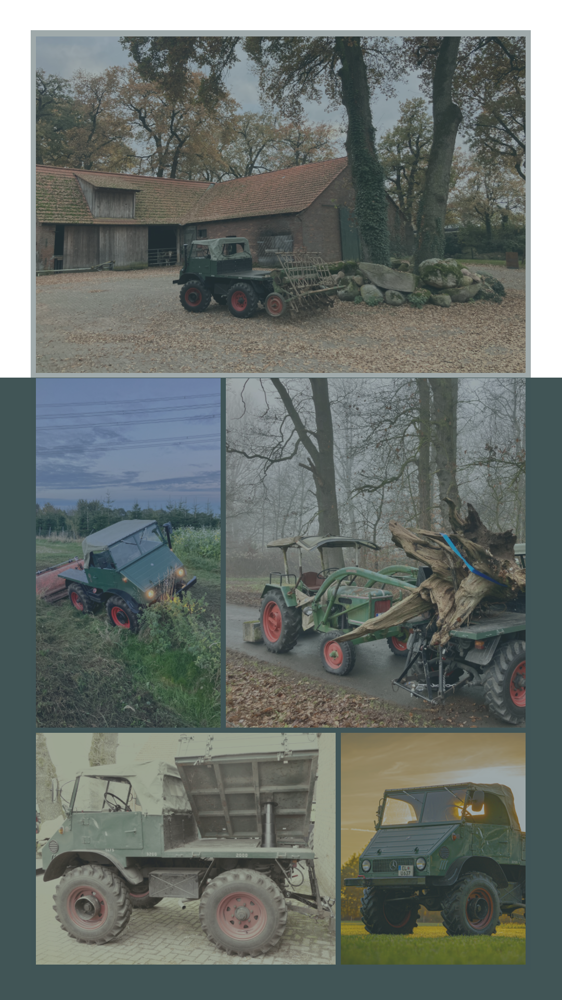

Unimog 411.110
Baujahr: 1957
Besitzer: Michael S.
Getriebe: Synchronisiertes Schaltgetriebe
Zapfwelle: Hinten
Kraftheber: Pneumatischer Kraftheber hinten
Der Unimog 411.110 gehört zur legendären 411er‑Baureihe, die für ihre Vielseitigkeit und Robustheit bekannt ist. Das Modelljahr 1957 markiert eine Phase, in der der Unimog zunehmend modernisiert wurde – unter anderem durch die Einführung synchronisierter Getriebevarianten.
Dieser Unimog ist mit einer hinteren Zapfwelle sowie einem pneumatischen Kraftheber ausgestattet, was ihn besonders für landwirtschaftliche und kommunale Einsätze prädestiniert.
Das Fahrzeug befindet sich heute im Privatbesitz von Michael S. und wird weiterhin gepflegt und erhalten. Durch seine technische Ausstattung und den guten Zustand stellt dieser 411.110 ein wertvolles Stück Unimog‑Geschichte dar.